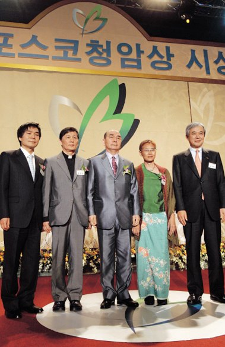
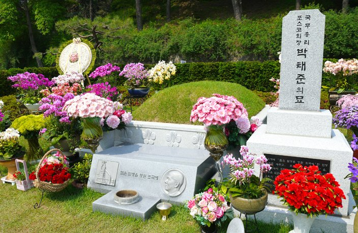

POSCO청암재단과 강연을 통해 마지막까지 후학과 나라의 미래를 당부한 시기.
- 200174세
뉴욕 코넬대학병원에서 폐 밑 물혹 제거 수술.
- 200275세
수술 후 귀국. 포스코 사명변경 (포항종합제철주식회사 → POSCO).
- 200376세
‘중국발전연구기금회’ 고문으로 초빙되어 베이징 댜오위타이 ‘2003년 중국발전고위층논단’에 참석, 중국경제에 대한 연설.
- 200477세
평전『세계 최고의 철강인 박태준』 출간.
- 200881세
POSCO청암재단 이사장 취임.

제1회 ‘포스코청암상’ 시상식 - 201083세
베트남 국립하노이대학교 특별강연.
- 201184세
12월 13일 오후 5시 20분 영면, 서울 국립 현충원 국가유공자묘역에 안장.

故 청암 박태준 현충원 묘지
※ 전 시기를 한 번에 보려면 전체연보를 이용하십시오. 이 시대의 사진 2장은 구 홈페이지 시대별 연보 페이지의 원본 이미지입니다.